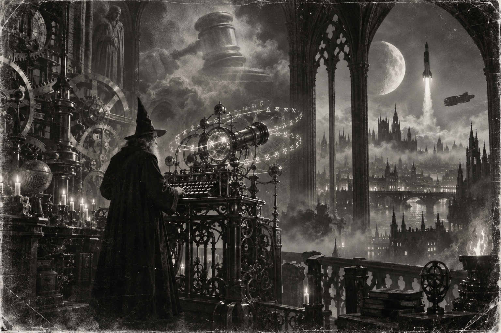

Morning Edition
6:00 AM CDTFinance & Markets
Tuesday Gave Another Red Close
Wednesday. The Fed is in the room. Inherit Tuesday: S&P 500 7,585.73, down 34.25, or 0.45%. Nasdaq 25,981.57, down 204.84, or 0.78%. Dow 52,093.11, down 328.09, or 0.63%. The S&P is off six of the past seven, lowest close since July 31. A two-day fade is not the vote. Read the close. Then keep the gavel on the board.
Source: Morningstar / Dow Jones and Morningstar / Dow Jones, September 15, 2026The First Hike in Three Years
NPR: Chair Kevin Warsh is widely expected to raise a quarter point to 3.75%–4.00% this afternoon. First increase in more than three years. August CPI 3.4%. The Iran war rekindled the pump. Higher rates will not cheapen diesel. A Jackson Hole speech is not a vote. Read the statement. Then wait for Warsh.
Source: NPR and WTOP, September 15–16, 2026The Barrel Stayed Expensive
TECHi's Wednesday print: WTI $103.65, down $2.18, or 2.06%. Brent $107.54. A red crude day is not a cheap strait. Hormuz and Bab-el-Mandeb are still on the board. Read the barrel. Then keep oil next to the gavel.
Source: TECHi, September 16, 2026World & US
A Building Fell in Gaza
AP: Wednesday morning, a damaged multistory building housing displaced families collapsed in Gaza City. At least 16 dead, most of them women and children. Dozens missing or trapped. There had been warnings. Rubble is not a ceasefire. Hold the names. Then keep the search on the board.
Source: AP via Skagit Valley Herald, September 16, 2026Mecca as a Red Line
Reuters and BBC: Tuesday evening, Saudi air defenses destroyed a drone south of Mecca. Riyadh called the holy city a red line. The Houthis denied targeting it. An intercept is not an origin. Read the wreckage. Then keep the Red Sea on the board.
Source: Reuters and BBC, September 16, 2026Brussels Offered Canada a Chair
AP: von der Leyen proposed a path for Canada to become the EU's first associate member. Carney received a standing ovation in Strasbourg. An alliance is not a treaty. Read the speech. Then keep both shores on the board.
Source: AP via Skagit Valley Herald, September 16, 2026
The Wednesday Rebase: the wizard does not ship before the review. He watches Vandenberg, then keeps the gavel on the board.
"Smart work is not extra work. Rebase the pending list. Then wait for the gavel."- The Developer's Almanac
Sagittarius Horoscope
Justin, India Today says stay on the plan: emphasise smart work, keep the budget, and do not get overenthusiastic. Necessary information may be received if you move with preparation. Times of India adds the quieter chart: confidence can dip, expenses can rise, so keep the simplest schedule and speak gently. Denver Post puts four stars on your sign; Moon Alert until 1 p.m. EDT — no shopping, no big calls — then the Moon enters Sagittarius and you are in charge tonight. Your Rat-year ingenuity is the rebase, not the Wednesday ship. Lucky number 9. Lucky color forest green. Lucky hex: #0B6E4F. Lucky command: git rebase -i.
Tech, AI, Space & Crypto
-
OpenAI Eyed a $1.2 Trillion Door
Dow Jones at 5 a.m. ET: OpenAI has had preliminary talks on a pre-IPO round above $1.2 trillion. A public listing is eyed for 2027. A valuation is not a compile. Read the raise. Then keep next year on the board.
Source: Morningstar / Dow Jones, September 16, 2026 -
Opposite Ends of the Same Stage
NPR: Sanders and Bannon shared a Tuesday stage against the AI industry. Sanders will introduce a ban on "superintelligent" AI with Rep. Greg Casar. A shared stage is not a shared bill. Read both rooms. Then keep the second look.
Source: NPR, September 15–16, 2026 -
Bitcoin Held the $75,000 Floor
TECHi shows BTC/USD at $75,886 as of 10:59 UTC, up $273, or 0.36%. Previous close $75,613. Daily high $76,009. Daily low $75,349. Seven-day move still red, down 3.03%. Do not chase a Wednesday candle into the Fed. Inherit the level. Rebase first.
Source: TECHi, September 16, 2026 -
Weapons Named in Orbit
NPR: Air Force Secretary Troy Meink said the U.S. has fielded "on-orbit space control weapons." First public confirmation. No type, no count, no target. USSF-259 still has tonight's window from Vandenberg, 6:00 p.m. PDT, delayed from last night. A named weapon is not a named payload. Watch California, then keep the sky on the board.
Source: NPR and Spaceflight Now, September 16, 2026
Morning Compile
- Tuesday faded again. The Fed speaks this afternoon.
- A building fell in Gaza. Mecca was called a red line. Brussels offered Canada a chair.
- OpenAI talked $1.2T. USSF-259 flies tonight if the window holds.
- Smart work. Then run git rebase -i.